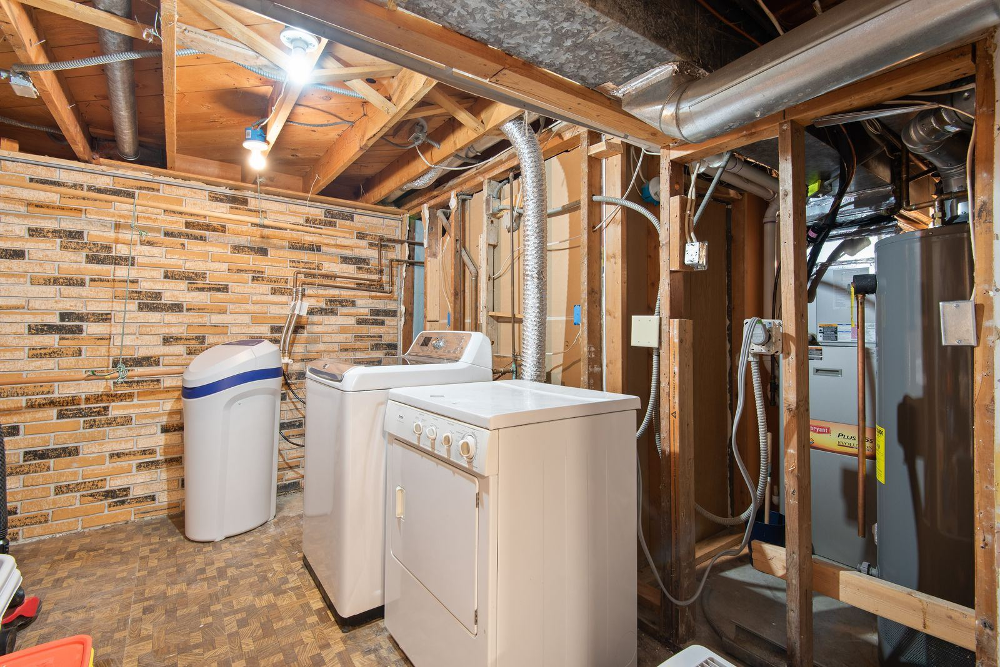

Most gas water heaters in Winchester, VA work the same basic way. Gas enters through a control valve that doubles as the thermostat and feeds a burner beneath the tank, and the hot exhaust travels up a flue through the middle of the tank and out through the vent. A thermocouple, or a flame sensor on newer electronic models, tells the valve a flame is present; without that signal, the valve shuts off the gas for safety. The design is dependable, but it has a few predictable weak spots. Thermocouples wear out, pilot tubes and burner ports clog, the flame arrestor screen at the base packs up with lint and dust, control valves fail, and vents lose their draft.
Every gas water heater call starts with safety and then moves to testing. If there is a gas odor, leave the home first, call the gas utility from outside, and do not operate switches or try to relight anything. Once the area is safe, our Winchester technicians work through the heater systematically: millivolt readings on the thermocouple, a close look at the pilot and main burner flames, gas pressure at the control valve, a draft test to make sure exhaust is not spilling back, and a CO check around the appliance. Scorch marks at the burner access, rust flakes on the burner, and a lazy yellow flame each point to a different problem, and we chase down the right one.
Some gas heaters need a quick part swap, and some need an honest conversation. We handle both. Thermocouples, flame sensors, pilot assemblies, hot surface igniters, gas valves, and burner cleaning are routine repairs, and we correct venting faults and flush sediment during the same visit when needed. If the tank is leaking, rusting through, or past about ten to twelve years with a major failure, we will explain why replacement makes more sense. Our installations cover like-for-like swaps and upgrades to power vent or high-efficiency models, with correct gas line sizing, sediment traps, expansion tanks, drain pans, and seismic strapping wherever required. Call (540) 200-2330 to schedule service in Winchester.
Most of our service calls are for Water Heater Repair in Winchester and Water Heater Installation in Winchester. That's the place to start for most homes.

Warning Signs to Watch For
A heater that is starting to struggle rarely hides it for long, and the clues are easy to spot once you know them. If any of the following sound familiar, it's worth having the unit checked:
- Loud rumbling from the bottom of the tank
- A yellow, lazy, or sooty burner flame instead of a crisp blue one
- Water pooling around the base of the heater
- Exhaust odor, rust, or moisture around the draft hood and vent pipe
- A faint gas or rotten-egg smell near the heater (leave and call the gas utility)
- Less hot water than the tank should deliver
- A cold tank and a burner that will not come on
- Pilot outages that keep coming back after a relight
A Slow Leak Never Stays Slow
Most water heater failures start small: a popping sound from sediment, a damp spot under the drain valve, or a shower that goes lukewarm a few minutes sooner each week. Call Winchester Water Heater at (540) 200-2330 at the first sign of trouble.
Need Help With Gas Water Heater Services?
Our experienced technicians are standing by to help.
Call (540) 200-2330 NowYour Gas Water Heater Services Questions Answered
The Benefits of Professional Gas Water Heater Services
Gas water heaters are among the riskiest appliances to work on without training, largely because you cannot see the biggest hazards. A fitting that is almost tight can seep gas for days before anyone notices. A vent connector that has lost its slope, or a flue partly blocked by debris, can let carbon monoxide spill into the house every time the burner fires, with no smell to warn you. Gas valve and heater replacements also typically require a permit and an inspection. Relighting a pilot by following the label is something most homeowners can do; almost everything past that deserves a technician.
Professional service gets you a correct answer and a safe appliance. We confirm thermocouple output, gas pressure, burner flame, and draft with real instruments, not trial and error. Every gas connection we make is tested for leaks before we leave, and vent connectors are secured with the right slope and clearances. When a replacement is needed, we size the new heater by first-hour rating, handle the permit where one is required, and add the expansion tank, sediment trap, drain pan, or seismic straps your home needs. The result is hot water you do not have to worry about.
Our Gas Water Heater Services Process
Every visit follows a step-by-step method built around testing first and replacing parts only when the readings call for it. Here's the short version:
Find the Real Fault
Before a single part is changed, we confirm the heater is safe to work on and test each part of the ignition, gas, and venting systems to pinpoint what actually failed.
Clear Answers & Upfront Price
No guesswork on the bill. We explain the fault and the fix, quote it up front, and give you an honest repair-versus-replace answer on older heaters.
Expert Repair or Replacement
The majority of repairs are finished immediately, from a new thermocouple to a cleaned burner or corrected vent. New installs include gas line work, a sediment trap, and the code items your home needs.
Draft & Leak Test
No gas job is done until it is proven safe. We leak-test the connections, verify draft and flame, check for carbon monoxide, and set the temperature to about 120 degrees.
Tips to Keep Your Water Heater Healthy
Routine maintenance is almost always cheaper and easier than an early replacement. Follow these tips from our technicians:
- Watch for a loose, rusted, or sagging vent pipe above the heater
- Have the anode rod inspected every few years and replaced when it is worn
- Clean dust from around the base so the burner gets plenty of combustion air
- Never store flammable liquids near a gas water heater
- Flush the tank on a regular schedule so sediment never bakes onto the bottom
- Set the gas valve near 120 degrees, because hotter water costs more and can scald
- Keep working CO alarms near bedrooms and on each floor
Comparing DIY and Professional Work
Some simple checks are fine to do yourself, but most water heater repairs benefit from professional tools, training, and experience. Here's how the two approaches stack up:
| Consideration | Doing It Yourself | Professional Service |
|---|---|---|
| Finding the Fault | Replace the thermocouple and hope | Millivolt, pressure, and draft tests find the cause |
| Gas Leaks | Joints tightened without a proper leak test | Connections checked with leak solution or a detector |
| Exhaust Safety | Carbon monoxide risk unchecked | Draft tested and CO measured |
| Code Compliance | Permit and inspection often skipped | Code items installed as required |
| Tank Condition | Anode rod ignored | Honest read on the tank's remaining life |
| Outcome | Pilot goes out again next week | Real fault repaired and tested |
Let's Get Your Hot Water Back
Cold showers and damp floors don't get better on their own. Winchester Water Heater can have a technician headed your way soon.
Get Help: (540) 200-2330Gas Water Heater Services Across the Winchester Area
Our service area reaches well past the city limits. Choose your community for local details.